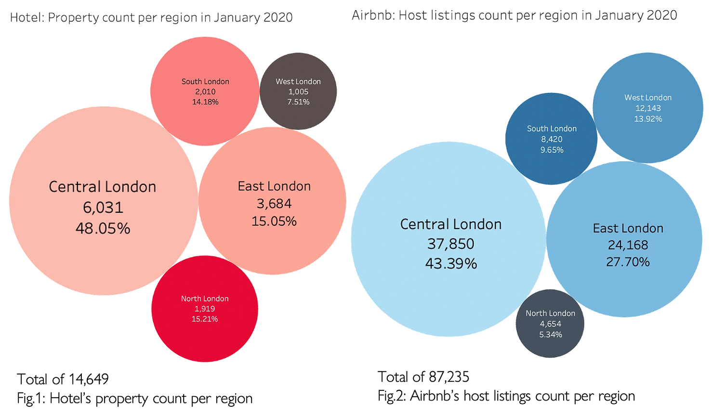
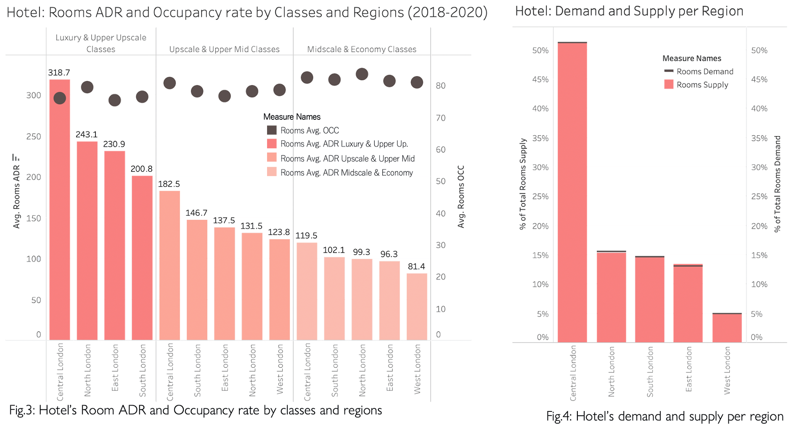
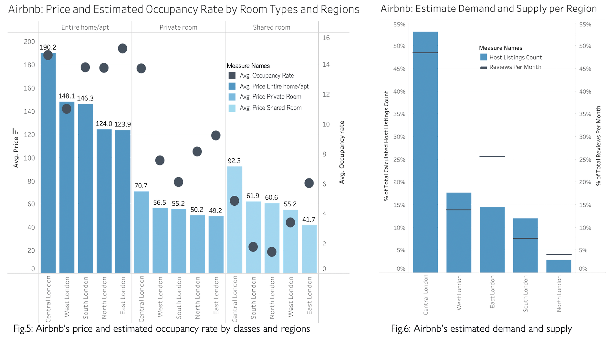
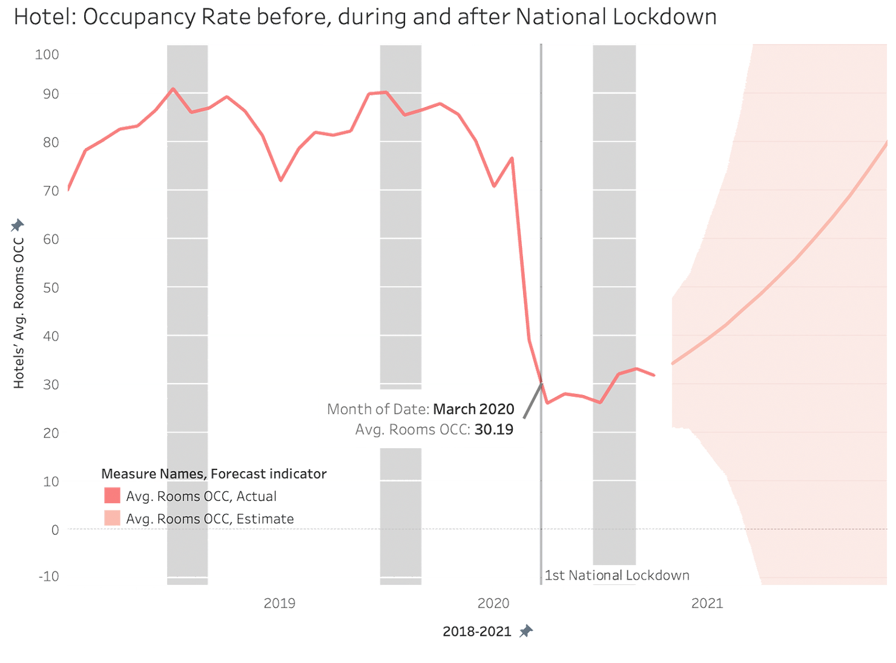

Airbnb vs Hotels
This project, conducted as part of a university module, Technology, Media, and Data (MAN2130), examines Airbnb's influence on hotel performance before and during the COVID-19 pandemic in London from 2018 to 2020. The investigation utilised data provided by Airbnb from 2018 to 2020, which was cleaned and analysed using Excel before being visualised using Tableau.
The project was collaboratively developed on April 18, 2021, with Andrea Sim, Charmian Chang, Elina Riznic, and Janavi Shrestha.
1. Introduction
The sharing economy has recently experienced substantial growth in the hospitality sector (Xu et al., 2019), with Airbnb emerging as a leading example. The platform's market penetration has positioned it as a key player, causing disruptions within the hotel industry (Dogru et al., 2020). As noted by Zervas et al. (2017), Airbnb’s growth has had adverse effects on hotel occupancy rates (OCC) and average daily rates (ADR). Nonetheless, factors such as security, hygiene, and quality standards continue to favour hotels.
This study focuses on London due to its dense concentration of both hotels and Airbnb listings (Admiak, 2018). The objective is to investigate Airbnb's impact on hotel occupancy rates and the extent to which pricing influences the consumer decision-making process, particularly in the context of Covid-19 and the 2019 lockdown.
Equation used for Airbnb’s Occupancy Rate:
2. Overview of Airbnb and Hotels
| Hotels | Airbnb | |
|---|---|---|
| Average Price | £169.00 | £116.90 |
| Average Occupancy Rate % | 79.30 | 14.01 |
- Hotel prices are higher compared to Airbnb.
- The average occupancy rate for hotels is relatively high, at almost 80%, whereas for Airbnb, it stands at only 14.01%. This indicates that while hotel rooms are being occupied at a high rate, many of Airbnb's properties remain vacant at any given time.
3. Listing of Airbnb and Hotels
Red and Blue Ocean Strategy
- Hotels - Red Ocean: Hotels often target the same market, primarily in traditional tourist areas, leading to intense competition among them (Kim & Mauborgne, 2005). → Non-tourist areas deemed unprofitable by hotels are typically excluded from their market strategy.
- Airbnb - Blue Ocean: Airbnb provides homeowners with the opportunity to rent out their properties (Shabrina et al., 2019). With 87,235 listed properties (Fig.2), Airbnb has six times the number of listings compared to hotels. → By covering a broader geographic area, Airbnb is capturing otherwise uncontested market segments (Kim & Mauborgne, 2005).
- Central and East London have the highest concentration of both hotel and Airbnb properties, resulting in heightened competition between them.
4. Pricing and Property Analysis (2018 - 2020)
 Airbnb as a Disruptive Innovation
- Airbnb’s pricing (Fig.5) is lower than that of hotels (Fig.3), appealing to budget-conscious customers seeking cheaper lodging alternatives.
- Airbnb disrupts the traditional hotel business model by outperforming it in various dimensions of the experiencescape (Mody et al., 2020).
- Personalisation: Offering a diverse array of homes in varied locations → micro-segmentation.
- Uniqueness: Airbnb accommodations provide different styles compared to conventional hotel rooms, creating new experiences that enhance serendipity.
- Community and Localness: Guests can forge connections with hosts, locals, and fellow travellers while sharing a space.
- Hotels maintain an occupancy rate above 80% (Fig.3), whereas for Airbnb it is less than 16% (Fig.5).
- This decline in occupancy for Airbnb may stem from supply growth exceeding demand (Lloyed-Jones, 2008).
- Hotels adeptly match demand and supply by examining changes in demand and adjusting supply accordingly (Fig.4), resulting in consistently high occupancy rates (Weatherford & Kimes, 2003).
- Conversely, due to the high number of listings, Airbnb’s supply often exceeds demand, leading to high competition between listings (Fig.6) and resulting in low occupancy rates.
5. Occupancy During COVID-19 and Forecast
Hotels
- Occupancy is expected to gradually increase throughout 2021.
Gradual increase
- Increased bookings are expected for hotels compared to Airbnb after recovery due to concerns about cleanliness, as hotel rooms are perceived to be cleaner (O’Regan, 2020, cited by O'Sullivan, 2020).
- There is a growing demand for serviced apartments, similar to Airbnb listings (Hickey, 2020, cited by O'Sullivan, 2020).
- London hotels heavily rely on business trips, meetings, and international travel (PwC, n.d.).
Airbnb
- Occupancy is expected to increase, reaching its peak in Q3 of 2021 before dropping in Q4.
Peak at Q3
- This peak is anticipated during the summer months of June, July, and August.
- Short-term rental bookings are expected to be higher in 2021 (Menze, 2021).
- The domestic market is predicted to rebound the quickest (Hickney, 2020, cited by O'Sullivan, 2020).
- There is a growing sense of personalisation.
Drop in Q4
- The drop might be due to a mismatch between demand and supply.
- Domestic tourists are more price-sensitive and have lower spending patterns (OECD, 2020).
6. Recommendations
- Examine potentially profitable non-touristy areas – during Covid-19, people may prefer less populated areas for accommodation (Skift Research, 2020).
- Travelodge aimed to open 13 new branches across Southeast London (O'Bryne Mulligan, 2021).
- Diversification to include more product offerings – service apartments, partnerships with restaurants, for extended purposes like socialising or daytime office workspaces.
- Post Covid-19, hotels should offer more flexible booking policies (Siteminder, 2021).
7. Limitations
- Forecasting is based on limited data (from 2018 to 2020) and limited forecasting methods.
- The equation for Airbnb’s occupancy rate may not be accurate as it is based on reviews per month, and not all visits result in a review (70% of visits end up with a review (Rusteen, n.d.)).
8. Conclusion
In conclusion, this research analysed data from both hotels and Airbnb in London before, during, and after the Covid-19 pandemic. It examined how Airbnb has transformed traditional hotel stays through location, pricing, and authentic experiences. The forecast provided insights into tourist accommodation preferences in light of Covid-19 sanitary and health measures. The findings suggest that hotel occupancy is likely to increase due to perceived hygiene and quality standards, while Airbnb’s occupancy is expected to gradually decline after the peak season.
References
- Admiak, C., 2018. Mapping Airbnb supply in European cities. Annals of Tourism Research, 71(c), 67–71. [Google Scholar].
- Blumenthal, B., 2021. How Hotel and Airbnb Cancellation Policies Are Changing Amid Coronavirus. [online] Condé Nast Traveler. Available at: https://www.cntraveler.com/story/coronavirus-hotel-cancellation-policy [Accessed 16 April 2021].
- Dogru, T., Hanks, L., Mody, M., Suess, C. and Sirakaya-Turk, E., 2020. The effects of Airbnb on hotel performance: Evidence from cities beyond the United States. Tourism Management, 79, p.104090.
- HGEM. 2021. How is Airbnb affecting the hotel market?. [online] Available at: https://www.hgem.com/opinion/how-is-airbnb-affecting-the-hotel-market [Accessed 16 April 2021].
- Kim W and Mauborgne R., 2005. Blue ocean strategy. Boston, Mass: Harvard Business School Press.
- Lichfields.uk. 2021. Diversification of the Hospitality Sector: Homes and Hotels. [online] Available at: https://lichfields.uk/blog/2016/june/13/diversification-of-the-hospitality-sector-homes-and-hotels/ [Accessed 16 April 2021].
- Lloyd-Jones A., 2008. The Prognosis for Occupancy and Average Rate in a Slowing Economy. HVS. Available at: https://www.hvs.com/article/3223-The-Prognosis-for-Occupancy-and-Average-Rate-in-a-Slowing-Economy [Accessed 05/ 04/ 21].
- Menze, J., 2021. Short-term rental bookings boom in the U.K. after roadmap announcement | PhocusWire. [online] Available at: https://www.phocuswire.com/short-term-rental-bookings-boom-in-the-uk [Accessed 13 Apr. 2021].
- O'Bryne Mulligan, E., 2021. Where Travelodge wants to open new hotels in south east London. [online] News Shopper. Available at:
- OECD. (2020). Rebuilding tourism for the future: COVID-19 policy responses and recovery. [online] Available at: https://www.oecd.org/coronavirus/policy-responses/rebuilding-tourism-for-the-future-covid-19-policy-responses-and-recovery-bced9859/.
- O'Sullivan, F., 2020. Bloomberg -Can Airbnb survive coronavirus? [online] Available at: https://www.bloomberg.com/news/articles/2020-04-03/can-airbnb-survive-coronavirus.
- PricewaterhouseCoopers, n.d.. UK Hotels Forecast 2020 - 2021. [online] PwC. Available at: https://www.pwc.co.uk/hotelsforecast [Accessed 13 April 2021].
- Rusteen, n.d. D 5 Tips to 5-Star Airbnb Reviews. [Online] Available at: https://optimizemybnb.com/5-tips-5-star-airbnb-reviews/ [Accessed 8 April 2021].
- Shabrina, Zahratu & Arcaute, Elsa & Batty, Michael. (2019). Airbnb's disruption of the housing structure in London. [online] Available at: https://www.researchgate.net/publication/332033983_Airbnb's_disruption_of_the_housing_structure_in_London [Accessed 9 April 2021].
- SiteMinder., 2021. Guest experience in hotels: How to achieve complete customer satisfaction. [online] Available at:
- Skift Research, 2020. The Travel Industry Turned Upside Down Available at: https://www.mckinsey.com/~/media/mckinsey/industries/travel%20logistics%20and%20infrastructure/our%20insights/the%20travel%20industry%20turned%20upside%20down%20insights%20analysis%20and%20actions%20for%20travel%20executives/the-travel-industry-turned-upside-down-insights-analysis-and-actions-for-travel-executives.pdf [Accessed 7 April 2021].
- Weatherford L and Kimes S., 2003. A comparison of forecasting methods for hotel revenue management. International Journal of Forecasting. 19 (3), 401-415. Available at: https://www-sciencedirect-com.surrey.idm.oclc.org/science/article/pii/S0169207002000110 [Accessed 5 April 2021].
- Xu, F., Hu, M., La, L., Wang, J. and Huang, C., 2019. The influence of neighbourhood environment on Airbnb: a geographically weighed regression analysis. Tourism Geographies, 22(1), pp.192-209.
- Zervas, G., Proserpio, D., & Buyers, J., 2017. The rise of the sharing economy: Estimating the impact of Airbnb on the hotel industry. Boston U. Journal of Marketing Research, 54(5), 687–705. [Google Scholar].